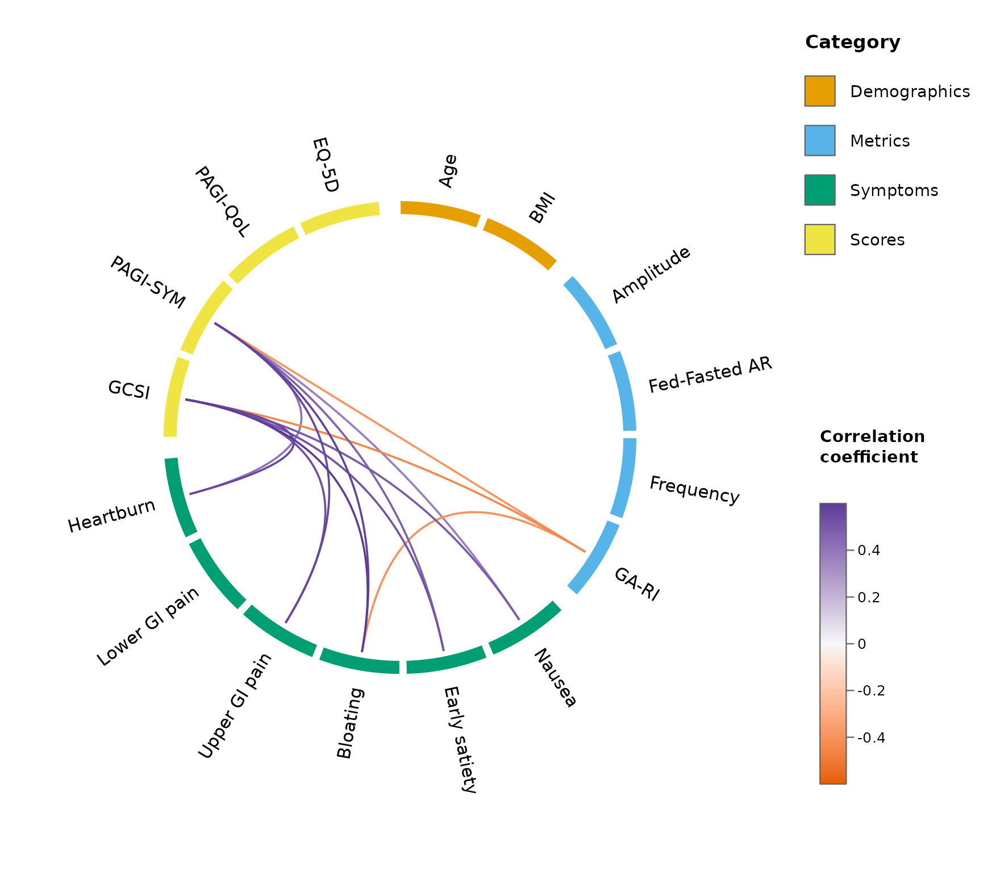
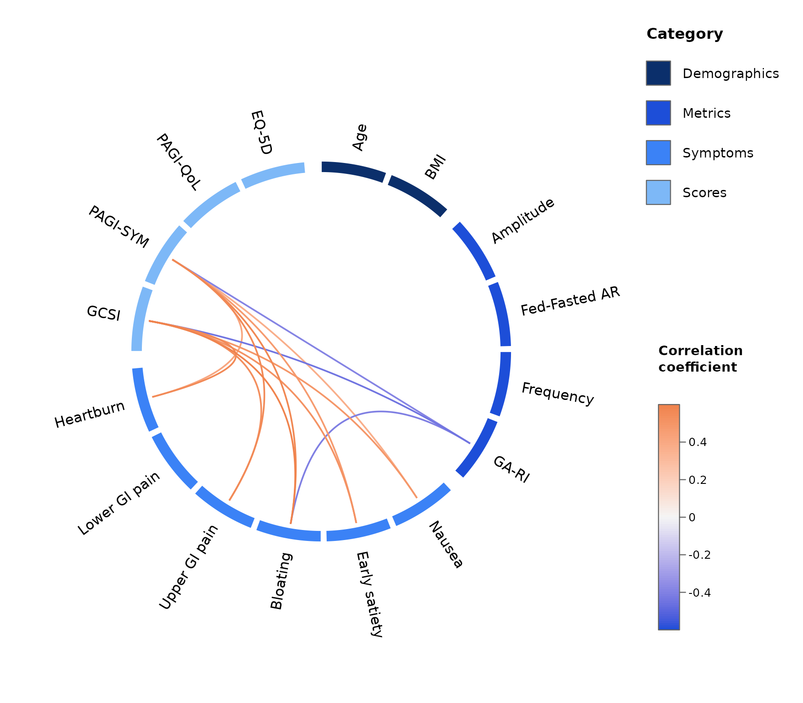
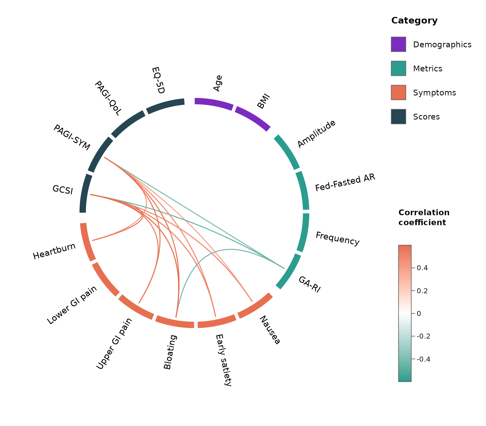
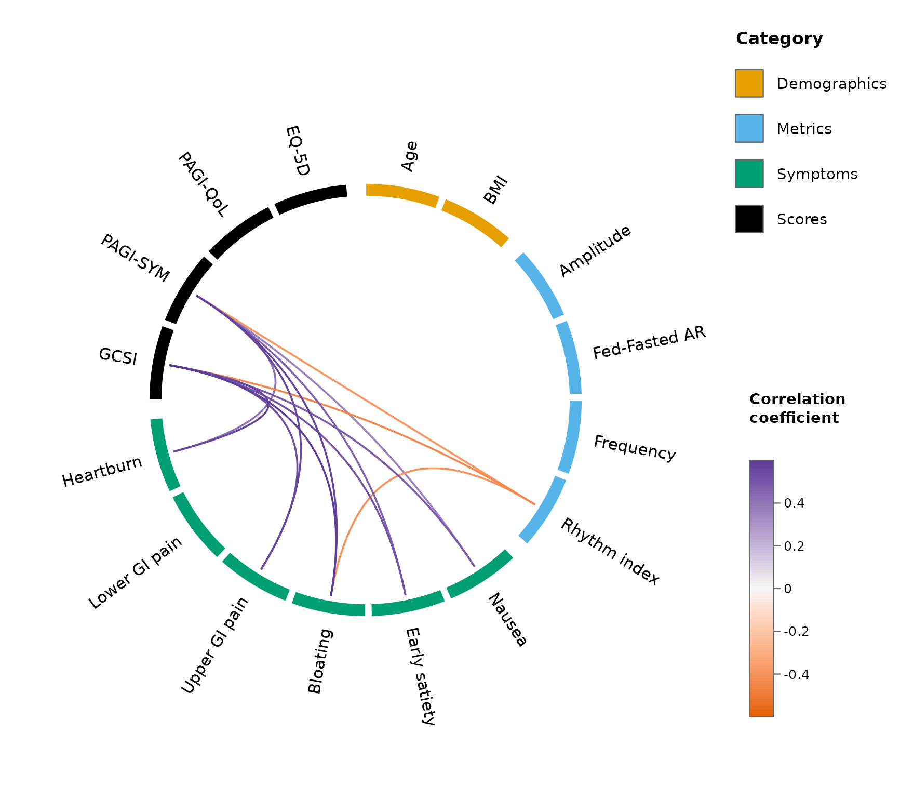
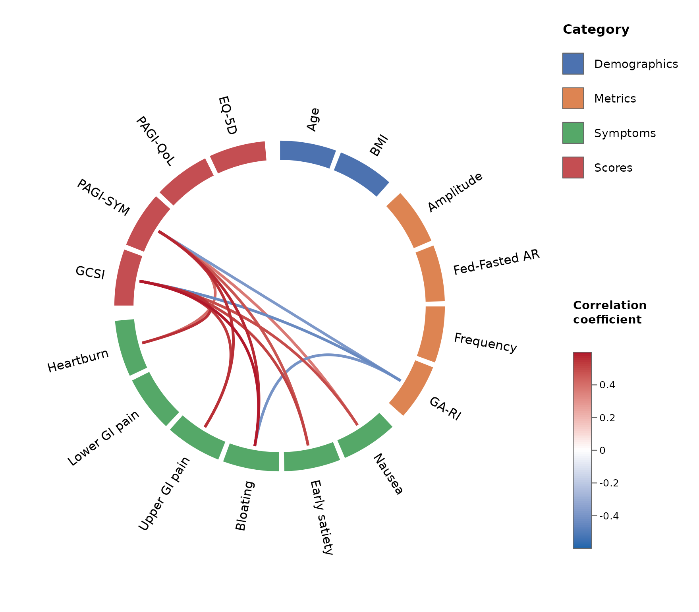
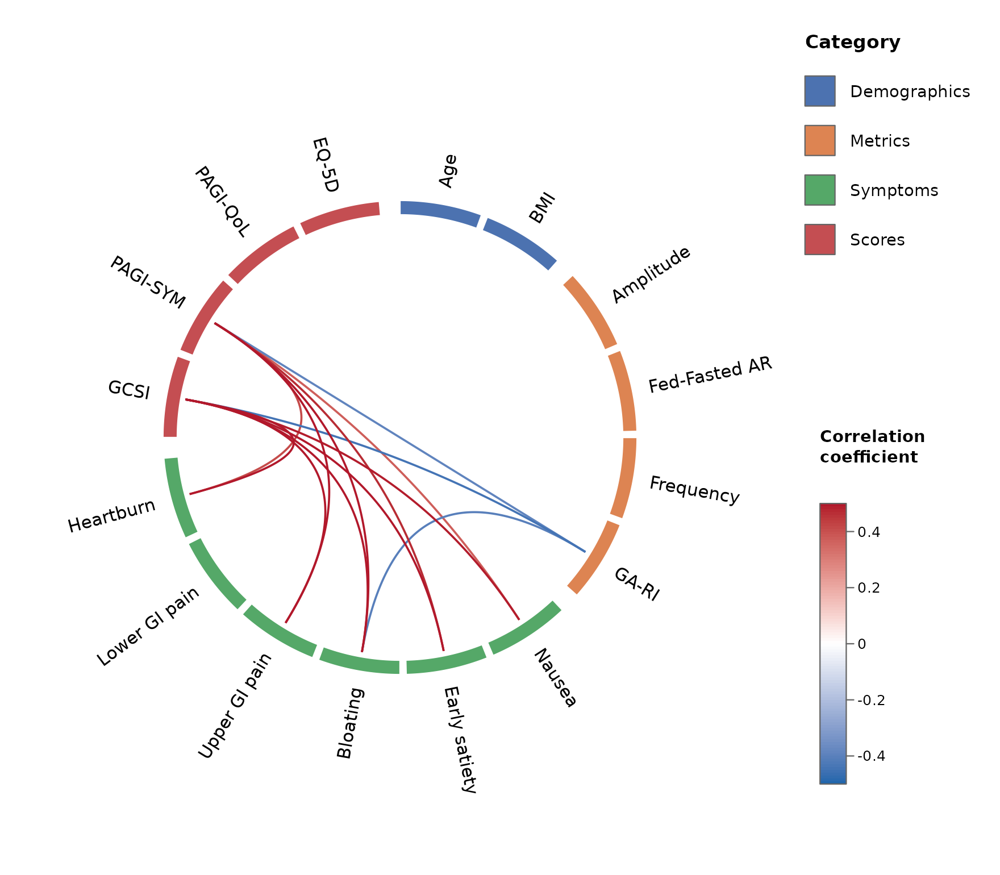

Motivation
A traditional correlation matrix carries a large amount of redundant information. For variables it has cells, but only of them are unique: the diagonal is all self-correlations (), the two triangles mirror each other, and large blocks of within-category correlations (symptom–symptom, metric–metric) are often not the question being asked. As grows, the interesting between-category relationships are buried in this redundancy and the figure becomes unreadable.
The correlation wheel was introduced by Gharibans
and colleagues to cut through this: variables sit around a circle,
grouped by category, and only the correlations of interest are drawn as
curved links coloured by their coefficient (Gharibans et al. 2019). circlecorR
reproduces that figure natively in R and makes the grouping, colours,
and statistics configurable.
The simplest path: straight from your data
Most datasets have one row per subject and
one column per variable. You do not need to build
correlation matrices yourself – hand that data frame directly to
corr_wheel() and it computes the correlations (and
p-values) for you.
The only other thing you supply is groups: a named list
mapping each category to its variables. This both
selects which variables appear (any other columns, such
as an ID, are ignored) and sets their order around the
wheel.
groups <- list(
Demographics = c("Age", "BMI"),
Metrics = c("Amplitude", "Fed-Fasted AR", "Frequency", "GA-RI"),
Symptoms = c("Nausea", "Early satiety", "Bloating",
"Upper GI pain", "Lower GI pain", "Heartburn"),
Scores = c("GCSI", "PAGI-SYM", "PAGI-QoL", "EQ-5D")
)
# `gastro_symptoms` is a synthetic per-row example dataset shipped with the package
head(gastro_symptoms[, 1:5])
#> Age BMI Amplitude Fed-Fasted AR Frequency
#> 1 74 41.0 30.26932 2.0004345 2.808546
#> 2 51 42.8 29.15670 0.7884043 1.760702
#> 3 59 36.2 29.73068 0.1899037 3.483917
#> 4 47 40.8 31.16330 -0.8294263 2.842009
#> 5 29 46.1 31.07111 0.9579552 4.015299
#> 6 50 36.4 29.86780 -2.0601868 1.179358
corr_wheel(
gastro_symptoms, # raw data: one row per subject
groups = groups,
method = "pearson", # correlation method
adjust = "hochberg", # multiple-comparison adjustment (see below)
sig_level = 0.05, # hide links with adjusted p > 0.05
r_threshold = 0.3, # ...and links with |r| < 0.3
r_limits = c(-0.6, 0.6)
)Hiding self- and within-category correlations
Two of the wheel’s most important features are that it never
draws self-correlations (the diagonal) and, by default,
hides within-category correlations
(hide_within_group = TRUE). This removes exactly the
redundant parts of the matrix and leaves the between-category
structure.
Crucially, this is carried through to the
statistics. Multiple-comparison correction penalises
you for the number of hypotheses tested. If self- and within-category
correlations are never tested, they should not count towards that
family. corr_wheel() therefore applies the adjustment over
only the correlations it displays. Shrinking the family
makes the correction less severe – so power improves – while remaining
statistically consistent with what is shown.
res <- corr_wheel(gastro_symptoms, groups = groups, adjust = "hochberg",
r_threshold = 0.3, r_limits = c(-0.6, 0.6))
k <- length(unlist(groups))
cat("Unique correlations in the full matrix:", k * (k - 1) / 2, "\n")
#> Unique correlations in the full matrix: 120
cat("Correlations actually tested (the family):", res$n_tests, "\n")
#> Correlations actually tested (the family): 92Because the family is smaller, each raw p-value is corrected by a smaller factor. Taking Bonferroni for a transparent example, the same correlation is penalised by the number of tests in its family – here 92 rather than 120:
p_raw <- 5e-4 # a raw p-value for one correlation
k_all <- k * (k - 1) / 2
cat("Bonferroni across the full matrix:", signif(p_raw * k_all, 3), "\n")
#> Bonferroni across the full matrix: 0.06
cat("Bonferroni across the family only:", signif(p_raw * res$n_tests, 3), "\n")
#> Bonferroni across the family only: 0.046The step-up methods ("holm", "hochberg",
"BH") behave the same way: fewer comparisons never gives a
larger adjusted p-value, so hiding redundant self- and within-category
correlations can only help power.
If you pass a pre-computed p-value matrix instead of raw data, it is taken as given (no re-adjustment), since it may already be corrected.
Other inputs
corr_wheel() auto-detects what you pass:
- raw data (non-square) – correlations computed for you;
- a correlation matrix plus a matching
pmatrix; - a
circlecorobject fromcompute_correlations().
r <- as.matrix(read.csv("Rvalues.csv", row.names = 1))
p <- as.matrix(read.csv("Pvalues.csv", row.names = 1))
corr_wheel(r, p, groups = groups, r_threshold = 0.3)Customising the look
Colour schemes
scheme sets the category colours and the diverging link
palette together, as one named preset. Built-in options are listed by
corr_wheel_schemes():
corr_wheel_schemes()
#> [1] "default" "colorblind" "mono_blue" "vivid"
corr_wheel(gastro_symptoms, groups = groups, r_threshold = 0.3,
r_limits = c(-0.6, 0.6), scheme = "colorblind")
corr_wheel_scheme() returns a scheme’s definition so you
can start from a preset and tweak it – here, lightening the midpoint of
the diverging scale:
s <- corr_wheel_scheme("mono_blue")
s$palette[2] <- "grey96"
corr_wheel(gastro_symptoms, groups = groups, r_threshold = 0.3,
r_limits = c(-0.6, 0.6), scheme = s)
Or build one entirely from scratch by passing
list(colors = , palette = ) directly – colors
is an unnamed vector cycled across however many categories you have, and
palette is the length-3 diverging scale (negative,
midpoint, positive):
corr_wheel(gastro_symptoms, groups = groups, r_threshold = 0.3,
r_limits = c(-0.6, 0.6),
scheme = list(colors = c("#7B2CBF", "#2A9D8F", "#E76F51", "#264653"),
palette = c("#2A9D8F", "white", "#E76F51")))
Colours and labels
colors maps categories to colours, layered on top of
scheme (or the default palette if scheme is
NULL) – only the categories you name are overridden.
labels gives pretty display names. Both are named vectors –
specify only the ones you want to change.
corr_wheel(
gastro_symptoms, groups = groups, r_threshold = 0.3, r_limits = c(-0.6, 0.6),
scheme = "colorblind",
colors = c(Scores = "black"), # override just one category
labels = c(`GA-RI` = "Rhythm index")
)
Size of blocks and lines
-
tile_height– radial thickness of the category blocks (smaller = thinner). -
link_lwd– line width of the links (larger = thicker).
corr_wheel(
gastro_symptoms, groups = groups, r_threshold = 0.3, r_limits = c(-0.6, 0.6),
tile_height = 0.12, # thicker blocks
link_lwd = 3 # thicker lines
)
The diverging colour scale
palette sets the three colours at
c(-limit, 0, +limit) (overriding scheme’s) and
r_limits the scale range.
corr_wheel(
gastro_symptoms, groups = groups, r_threshold = 0.3,
palette = c("#2166AC", "white", "#B2182B"), # blue - white - red
r_limits = c(-0.5, 0.5)
)
Saving to a file
corr_wheel() draws on the active graphics device, so
save it the usual way:
png("correlation_wheel.png", width = 2500, height = 2000, res = 300)
corr_wheel(gastro_symptoms, groups = groups, r_threshold = 0.3,
r_limits = c(-0.6, 0.6))
dev.off()